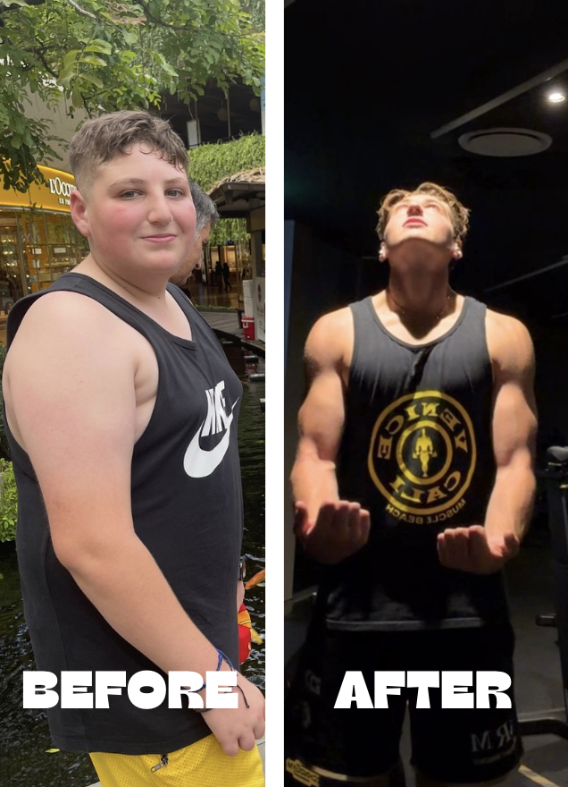

My Story
At my heaviest, I was 120kg. I was the kid who walked into every room expecting something to go wrong and the one who made himself smaller just to avoid becoming a target.
I was bullied throughout high school, carrying weight no one could see on top of the weight everyone could. The worst part was feeling like I had no control over any of it. Every day felt the same, heavy, invisible, and stuck.
Before anything changed externally, I made a decision. I was going to build.
Discipline came first, then structure, then a standard built on showing up every single day, especially when I didn't feel like it.
Eventually, I changed schools and stepped into a completely new environment where I knew no one. I had to rebuild who I was from the ground up.
It wasn't easy and it wasn't linear, but through that process, I lost 30kg, and more importantly, I became someone I actually recognised.
Everything Built By Dav stands for started with that one decision.
